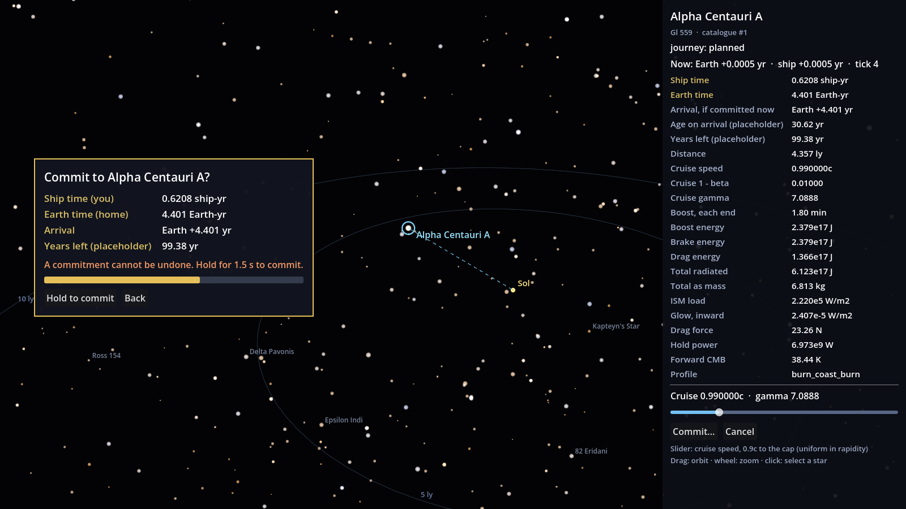
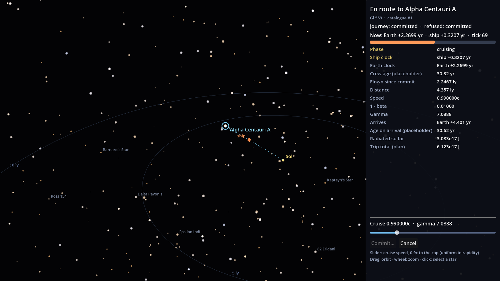
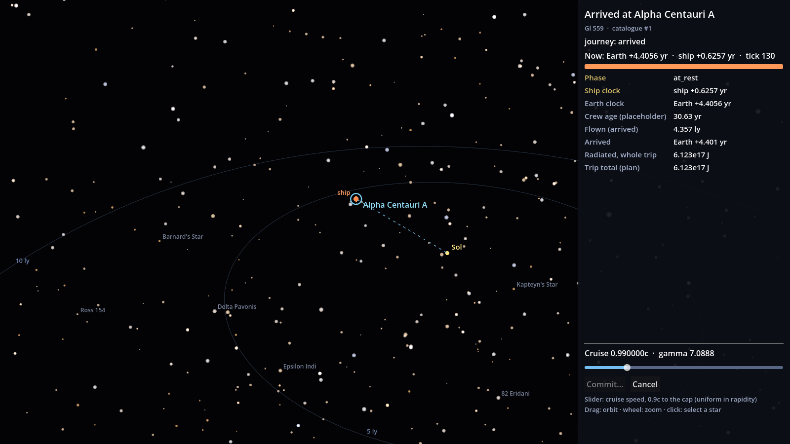

<title>Commit Ritual R2 Review</title>
<link rel="stylesheet" href="https://fonts.googleapis.com/css2?family=Fraunces:opsz,wght@9..144,500;9..144,650&family=IBM+Plex+Sans:wght@400;600&family=IBM+Plex+Mono:wght@400;500&display=swap">
<style>
/* Same page system as docs/m2.6a/review.html: one reading column, captures full width, numbers in tabular mono. */
:root {
  --bg: #f3f4f7; --surface: #ffffff; --fg: #161a24; --muted: #5b6375; --rule: #d6dae3;
  --accent: #1f6fa8; --gold: #9a6b12; --warn-bg: #fff4dc; --warn-fg: #6b4a07;
  --display: "Fraunces", Georgia, serif; --body: "IBM Plex Sans", system-ui, sans-serif; --mono: "IBM Plex Mono", ui-monospace, monospace;
}
@media (prefers-color-scheme: dark) { :root:not([data-theme="light"]) {
  --bg: #0b0e15; --surface: #121722; --fg: #e4e8f1; --muted: #9aa3b6; --rule: #2a3142;
  --accent: #7cc4f2; --gold: #e3bc62; --warn-bg: #2b2210; --warn-fg: #f0d28c; color-scheme: dark } }
:root[data-theme="dark"] {
  --bg: #0b0e15; --surface: #121722; --fg: #e4e8f1; --muted: #9aa3b6; --rule: #2a3142;
  --accent: #7cc4f2; --gold: #e3bc62; --warn-bg: #2b2210; --warn-fg: #f0d28c; color-scheme: dark }
body { background: var(--bg); color: var(--fg); font: 16px/1.6 var(--body); }
main { max-width: 980px; margin: 0 auto; padding-inline: 16px; padding-block: 32px 64px; display: grid; gap: 28px; }
h1, h2 { font-family: var(--display); text-wrap: balance; line-height: 1.15; margin: 0; }
h1 { font-size: 2.2rem; font-weight: 650; }
h2 { font-size: 1.35rem; font-weight: 500; }
p { margin: 0; max-width: 68ch; }
section { display: grid; gap: 12px; min-width: 0; }
.eyebrow { font: 500 0.75rem var(--mono); letter-spacing: 0.08em; text-transform: uppercase; color: var(--muted); }
figure { margin: 0; display: grid; gap: 6px; }
figure img { width: 100%; border: 1px solid var(--rule); border-radius: 4px; display: block; }
figcaption { font-size: 0.85rem; color: var(--muted); }
.pair { display: grid; grid-template-columns: repeat(auto-fit, minmax(280px, 1fr)); gap: 16px; }
.tbl { overflow-x: auto; background: var(--surface); border: 1px solid var(--rule); border-radius: 4px; }
table { border-collapse: collapse; width: 100%; font-size: 0.92rem; }
th, td { padding: 8px 12px; text-align: left; border-bottom: 1px solid var(--rule); white-space: nowrap; }
th { font-weight: 600; color: var(--muted); font-size: 0.8rem; }
td.n { font: 0.92rem var(--mono); font-variant-numeric: tabular-nums; }
tr:last-child td { border-bottom: 0; }
.note { background: var(--warn-bg); color: var(--warn-fg); padding: 14px 16px; border-radius: 4px; display: grid; gap: 8px; }
ul { margin: 0; padding-left: 1.2em; display: grid; gap: 4px; max-width: 70ch; }
code { font: 0.9em var(--mono); }
a { color: var(--accent); }
</style>

<main>
  <header style="display:grid;gap:10px">
    <span class="eyebrow">Stapledon's Voyage · R1-M2-JOURNEY · M2.6b · ◆ R2</span>
    <h1>Commit, transit, arrive</h1>
    <p>Map, plan, commit and transit now run end to end against the AILANG sim. The commit is one dialog with both clocks and the years left at home, and it is sent only after a 1.5 s hold (D-12). Once committed, Cancel stays on screen: the sim refuses it, and the panel says so. Stars carry their common names (D-17). Every number on screen is a sim field; Godot only formats it.</p>
  </header>

  <figure>
    
    <figcaption>The commit dialog, 0.9 s into the 1.5 s hold. Release before 1.5 s and nothing is sent; Back closes it.</figcaption>
  </figure>

  <section>
    <h2>The dialog's numbers</h2>
    <div class="tbl"><table>
      <thead><tr><th>Line</th><th>Shown</th><th>Sim field</th><th>Raw value</th></tr></thead>
      <tbody>
        <tr><td>Ship time (you)</td><td class="n">0.6208 ship-yr</td><td class="n">journey.plan.ship_years</td><td class="n">0.6207968821769395</td></tr>
        <tr><td>Earth time (home)</td><td class="n">4.401 Earth-yr</td><td class="n">journey.plan.earth_years</td><td class="n">4.400682082238228</td></tr>
        <tr><td>Arrival</td><td class="n">Earth +4.401 yr</td><td class="n">journey.plan.arrive_year</td><td class="n">4.401229652395655</td></tr>
        <tr><td>Years left (placeholder)</td><td class="n">99.38 yr</td><td class="n">journey.plan.years_left</td><td class="n">99.37865554766564</td></tr>
      </tbody>
    </table></div>
  </section>

  <section>
    <h2>Transit and arrival</h2>
    <div class="pair">
      <figure><figcaption>Mid-cruise, after pressing Cancel: <em>refused: committed</em>, journey unchanged. The ship marker is drawn from the sim's <code>ship.pos</code>.</figcaption></figure>
      <figure><figcaption>Arrived. The sim snapped the ship onto the target (residuals 3.6e-15 ly, 6.2e-15 yr).</figcaption></figure>
    </div>
    <div class="tbl"><table>
      <thead><tr><th>Readout line</th><th>Mid-cruise (tick 69)</th><th>Arrived (tick 130)</th><th>Sim field</th></tr></thead>
      <tbody>
        <tr><td>Phase</td><td class="n">cruising</td><td class="n">at_rest</td><td class="n">ship.phase</td></tr>
        <tr><td>Ship clock</td><td class="n">ship +0.3207 yr</td><td class="n">ship +0.6257 yr</td><td class="n">clock.tau</td></tr>
        <tr><td>Earth clock</td><td class="n">Earth +2.2699 yr</td><td class="n">Earth +4.4056 yr</td><td class="n">clock.year</td></tr>
        <tr><td>Flown</td><td class="n">2.2467 ly</td><td class="n">4.357 ly</td><td class="n">ship.flown / journey.plan.distance</td></tr>
        <tr><td>Speed</td><td class="n">0.990000c</td><td class="n">at rest</td><td class="n">ship.beta</td></tr>
        <tr><td>Radiated</td><td class="n">3.083e17 J</td><td class="n">6.123e17 J</td><td class="n">ledger.radiated_j</td></tr>
      </tbody>
    </table></div>
    <p style="font-size:0.9rem;color:var(--muted)">The arrived clocks run past the arrival (0.6213 ship-yr) because the last tick's remainder is spent at rest. Full dump, every label with its sim field and raw value: <code>docs/m2.6b/galaxy_map_panel.json</code>.</p>
  </section>

  <section>
    <h2>Star names</h2>
    <p>54 catalogue entries now carry a common name, from Proxima Centauri and Alpha Centauri A and B out to Arcturus and Denebola. The name is the panel title; the catalogue id is the subtitle (for example <code>Gl 559 · catalogue #1</code>). Names are keyed by catalogue index because A and B share an id. Each mapping was checked against literature positions, distances and magnitudes by <code>tools/check_star_names.py</code>, which runs in <code>make test</code>.</p>
    <div class="note">
      <p><strong>Two catalogue findings for the M1.2 tiers (nothing changed here, per D-17).</strong></p>
      <ul>
        <li>The committed <code>stars.json</code> has every galactic longitude mirrored: <code>l = 245.86° − l_true</code>. Latitudes and distances are right. The cause is a sign slip in the starmap-manager <code>process_stars.sh</code> (it adds the arctangent to l<sub>NCP</sub>; the IAU formula subtracts it). The M1.2 pipeline, <code>tools/extract.py</code>, uses the IAU matrix and is not affected. All 54 named stars match the mirrored longitude to within 0.15°.</li>
        <li>16 of the 54 named stars sit 3–15 % away from their literature distance in <code>stars.json</code> (Fomalhaut 21.2 vs 25.1 ly, Denebola 41.3 vs 35.9 ly, Tau Ceti 11.40 vs 11.91 ly). The map shows the catalogue's own value, as D-17 says.</li>
      </ul>
    </div>
  </section>

  <section>
    <h2>What to look at</h2>
    <ul>
      <li>The dialog: is "Ship time (you)" next to "Earth time (home)" the right way to show the cost? Is 1.5 s the right length for the hold?</li>
      <li>Transit speed: the clock runs at 0.1 ship-yr per real second while committed, so α Cen at 0.99c takes about 6 s. At rest the clock stays at one ship-day per second (D-12).</li>
      <li>After a commit, the slider and star picks still send plans, and the sim refuses each one with <em>committed</em>. The panel shows that refusal, not a greyed-out control.</li>
      <li>Names: only the selected star gets a bright label. Other named stars get faint labels, which are skipped where they would overlap (Proxima sits next to α Cen).</li>
    </ul>
    <p>Try it: <code>godot --path . -- --map=1</code>, then Commit…, hold the button for 1.5 s, and watch the transit. The captures come from <code>make map-capture</code>.</p>
  </section>
</main>
